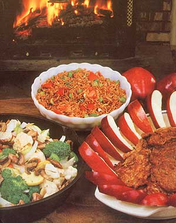

Why fire up the gas or electric range when the trusty old woodburner is waiting-warm and ready-to serve your wintertime cooking needs?
Over the past several winters, I've come up with quite a number of homegrown recipes designed especially for fixing on a wood heater. Three of them have become family favorites, and I'd like to share this trio of woodburner meal maps-one for each of the day's three repasts-with you. (Mind you, I prepare these dishes oil my trusty old wood cookstove, but they call also be done tip on the top of any well-fired box-type wood-heating stove . . . if you're willing to experiment until you hit upon the correct time-and-temperature combinations.)
These through-the-day meals are sure to delight the hungry mouths around your house, too. So slide that simmering teapot to the back of the stove, grab your ingredients, and let's get cooking!
FROSTY-MORNING PANCAKES
1-1/2 cups of whole wheat or unbleached flour
1/2 teaspoon of-salt
2 teaspoons of baking soda
1 teaspoon of cinnamon
1-1/2 cups of milk or fruit juice
3 tablespoons of honey
2 eggs
1/4 cup of cooking oil
1 apple, peeled arid chopped
3 tablespoons of sunflower seeds
In a mixing bowl, combine the flour, salt, baking soda, and cinnamon. Blend the milk or juice, honey, eggs, and oil in a separate container. Stir the wet and dry mixtures together, arid add the chopped apple and the sunflower seeds.
Now, set a heavy skillet or griddle oil a medium-hot stove top. When a drop of water will dance oil the heated surface and then evaporate quickly, you're ready to start cooking. Coat the bottom of the pan or griddle with cooking oil, arid pour in a large spoonful of your mix. Fry each cake until its edges are slightly dry arid its top bubbles, then flip it over to cook the other side. (For best results, use a large spatula and turn the cakes only once.)
Serve your pancakes topped with butter and maple syrup . . . or make your own sweet sauce by adding hot water to a jar of homemade preserves until the concoction reaches a syruplike consistency.
LUNCHTIME HOT RICE SALAD
2 cups of water
3 tablespoons of tamari
1 bay leaf
3 tablespoons of butter
1 cup of brown rice
1 onion, chopped
1/2 green pepper, chopped
1/2 cup of chopped tomato
Parmesan cheese
Bring the water to a boil. Add the tamari, bay leaf, 2 tablespoons of butter, arid the rice. Let the seasoned mix boil vigorously for 5 minutes before moving it to a cooler place tin the stove-or placing it on a trivet-to cook slowly for approximately 40 minutes. Just before the rice is done, sauté the chopped onion arid pepper in a tablespoon of butter over medium heat until they become limp. Add tile cooked vegetables and the chopped raw tomato to the rice . . . sprinkle individual portions with Parmesan cheese to suit your taste . . . and serve the dish with a bread of your choice.
CHINESE STIR-FRIED VEGETABLE DINNER
For this treat, you'll need to proportion tile following; ingredients to the number of servings you wish to prepare . . . about 1 to 2 cups per person, depending oil the appetites around your house:
carrots
broccoli
squash
spring onions
Spanish onions
celery
green pepper
cauliflower
mushrooms
almonds
green peas
Now, combine these spices, rubbing them with your fingers to blend theme and bring out their flavors:
1/4 teaspoon of nutmeg
1/4 teaspoon of coriander
1/4 teaspoon of cardamon
1/4 teaspoon of ginger
1/2 teaspoon of sage
1/2 teaspoon of granulated garlic
1/2 teaspoon of basil
1/2 teaspoon of celery seed
1 teaspoon of cumin
Set the spices aside. Slice the vegetables, not including the peas, thinly and toss them gently. Next, chop the almonds lengthwise (you may also want to toast them in a hot oven for 10 minutes). Then precook the peas in a pot of water until they're just tender.
Once you've completed these preparatory steps, pour 1/4 cup of sesame or peanut oil per serving into a cast-iron skillet and place the pan on the stove. When the oil is good and hot (you'll know it's ready if an onion slice will start sizzling as soon as it's dropped in), add all the vegetables except the peas. Cook these fixings for 5 minutes, stirring constantly, and then sprinkle on the blended spices. (Start with a healthy pinch per serving, adding more as you like.)
When everything's cooked to your satisfaction, it's time to eat. Top each helping with a spoonful of almonds and cooked peas. You may also want to serve the meal with brown rice or noodles, and to put tamari or soy sauce on the table.
EDIT'OR'S NOTE: For an excellent guide to buying, installing, caring )or, and using 4 wood cookstove-complete with scores of taste-tempting recipes-consider Jane Cooper's 208-page book, Woodstove Cookery: At Home on the Range. You may order this guide front Garden Way Publishing Company (Dept. TMEN, Charlotte, Vermont 05445) by sending the Jinn $6.95, plus $1.00 to cover shipping acrd handling.
And those of you who don't have o wood cookstove-but would like to take advantage of your airtight box stove for range-top winter cooking-may want to look into The Airtight Woodstove Cookbook by Dale Darling and Julia Ian Dyke (Brick /louse, $7.95). In addition to the impressive collection of mouth-watering stove-top recipes, this 128-pager includes directions hot building your own stove-top oven. This book is available from Mother's Bookshelf (restricted) , 105 Sroncy .Mountain Road, Hendersonville, North Carolina 28791 . . . for the list price plus $1.25 shipping and handling.
|
 |
|
|